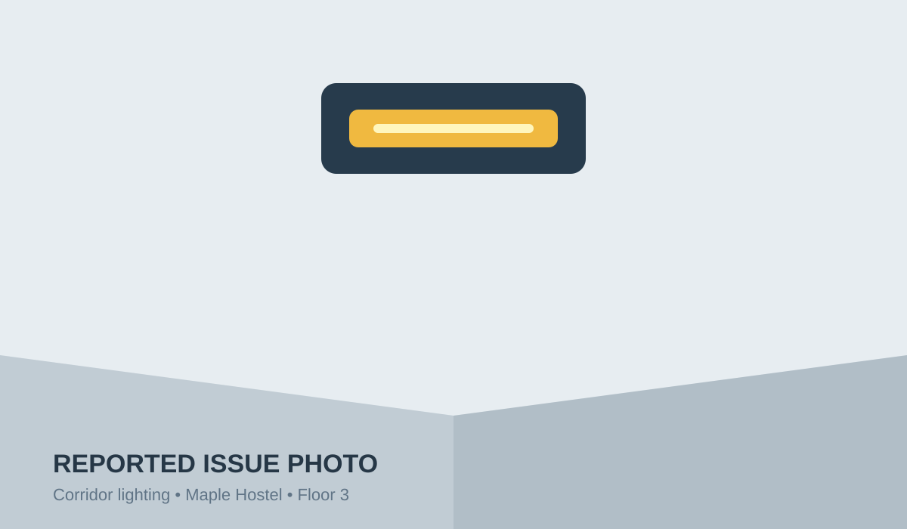
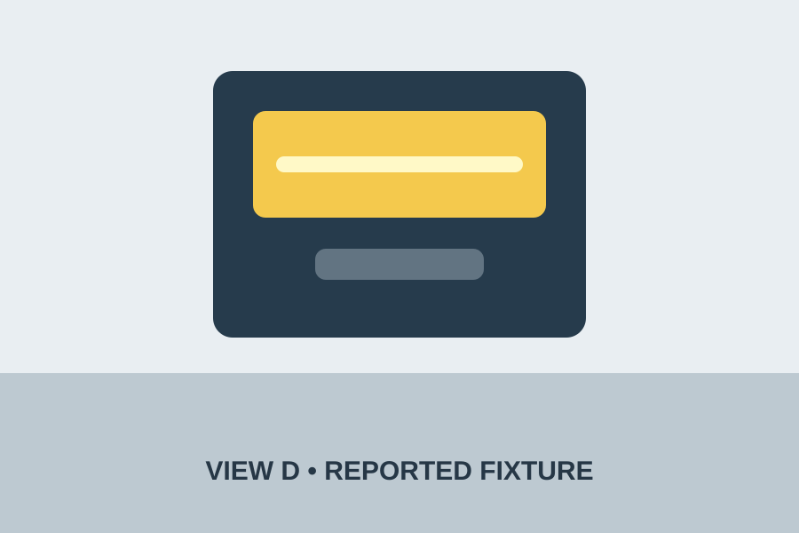

⌕ Search issues, rooms, people...
Report issue › Duplicate check
Possible duplicate found
We found 3 reports with a similar location and nearly identical issue.
⚠ This may already be reported.
We found 3 reports with a similar location and nearly identical issue. Following an existing report avoids duplicate complaints and keeps all updates in one place.
We found 3 reports with a similar location and nearly identical issue. Following an existing report avoids duplicate complaints and keeps all updates in one place.
YOUR REPORTReady to choose

Broken corridor light
Maple Hostel • Floor 3 • West corridor
High impact
⚡ Location confirmed on the server room floor.
SIMILAR OPEN AND RECENT REPORTSCompared by title, category, image and proximity

Light fixture outside...79% match • 110 m awayClosed